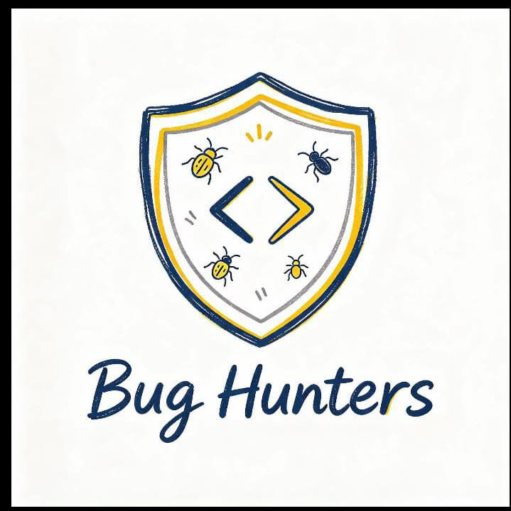

Logo Bug Hunters melambangkan tim yang teliti, kreatif, dan siap menghadapi berbagai tantangan dalam dunia teknologi. Perisai menggambarkan perlindungan dan ketangguhan, sedangkan simbol coding melambangkan kemampuan berpikir logis untuk menciptakan solusi. Gambar serangga menggambarkan berbagai kesalahan atau masalah yang perlu ditemukan dan diperbaiki. Warna biru tua melambangkan kepercayaan dan profesionalisme, sementara warna kuning melambangkan kreativitas dan semangat. Secara keseluruhan, Bug Hunters memiliki filosofi sebagai tim yang bekerja sama untuk menemukan masalah, menganalisis penyebabnya, dan menciptakan solusi melalui logika, ketelitian, serta kreativitas. Dengan semangat Identify, Analyze, Solve, kami percaya bahwa setiap masalah dapat dihadapi dan diselesaikan melalui kerja sama yang solid. 💻🛡️